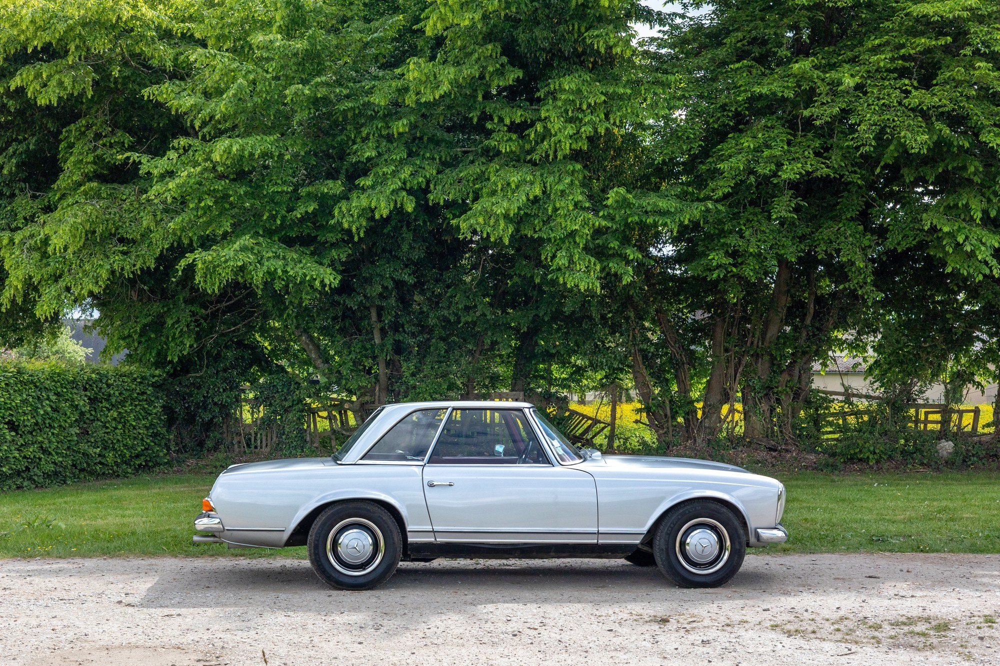
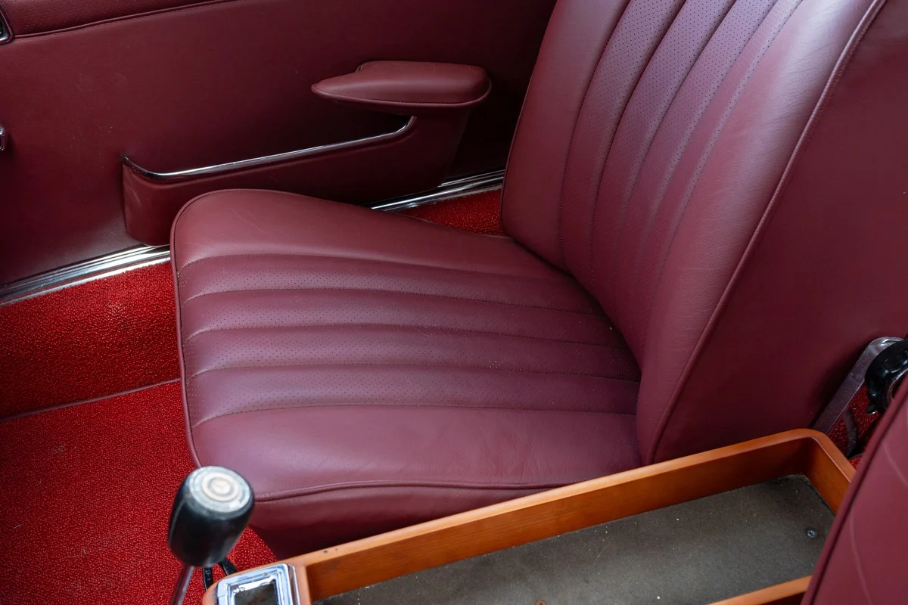
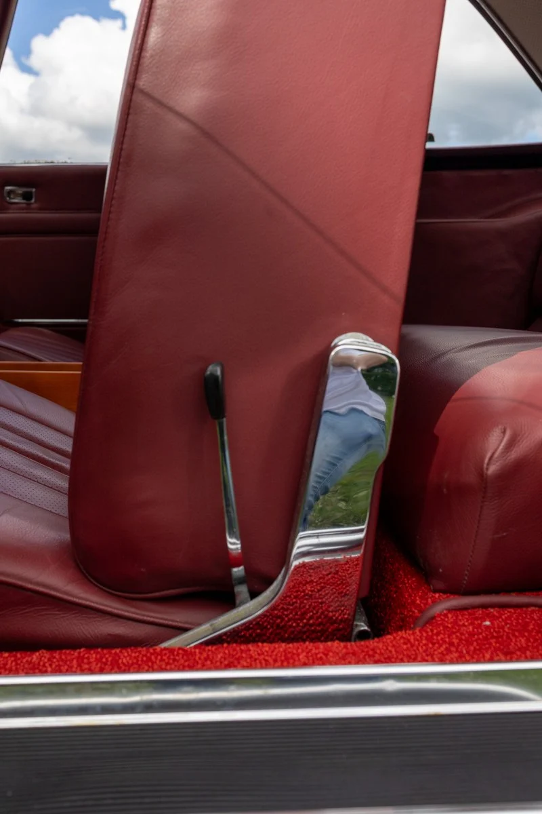

<!DOCTYPE html>
<html lang="en">
<head>
  <meta charset="UTF-8" />
  <meta name="viewport" content="width=device-width, initial-scale=1.0" />
  <title>1968 Mercedes 250 SL California</title>
  <link rel="preconnect" href="https://fonts.googleapis.com">
  <link rel="preconnect" href="https://fonts.gstatic.com" crossorigin>
  <link href="https://fonts.googleapis.com/css2?family=Work+Sans:wght@400;600&display=swap" rel="stylesheet">
  <link rel="stylesheet" href="https://cdnjs.cloudflare.com/ajax/libs/lightbox2/2.11.4/css/lightbox.min.css" />
  <style>
    * { box-sizing: border-box; }
    body {
      margin: 0;
      font-family: 'Work Sans', sans-serif;
      background-color: #ffffff;
      color: #333;
    }

    header {
      position: relative;
      background: url('7.webp') no-repeat center center;
      background-size: contain;
      background-color: #ffffff;
      height: 100vh;
      display: flex;
      flex-direction: column;
      justify-content: flex-end;
      align-items: center;
      text-align: center;
      padding: 40px 20px;
    }

    header h1 {
      font-size: 3em;
      font-weight: 600;
      margin: 0;
      color: #111;
    }

    header p {
      font-size: 1.2em;
      margin: 10px 0 0;
      color: #444;
    }

    .content {
      padding: 40px 20px;
      max-width: 1200px;
      margin: auto;
    }

    .description {
      font-size: 1.1em;
      margin-bottom: 30px;
      line-height: 1.6;
    }

    .gallery {
      display: grid;
      grid-template-columns: repeat(auto-fill, minmax(260px, 1fr));
      gap: 20px;
    }

    .gallery a {
      display: block;
      aspect-ratio: 4 / 3;
      overflow: hidden;
      border-radius: 10px;
      background-color: #fff;
      box-shadow: 0 4px 12px rgba(0,0,0,0.08);
    }

    .gallery a img {
      width: 100%;
      height: 100%;
      object-fit: cover;
      transition: transform 0.3s ease;
    }

    .gallery a img:hover {
      transform: scale(1.05);
    }

    .history {
      margin-top: 60px;
      font-size: 1em;
      line-height: 1.7;
      color: #444;
    }

    footer {
      text-align: center;
      padding: 20px;
      font-size: 0.9em;
      color: #666;
    }

    @media (max-width: 768px) {
      header {
        background-size: contain;
        height: 80vh;
      }
      header h1 {
        font-size: 2em;
      }
      .content {
        padding: 20px;
      }
    }
  </style>
</head>
<body>

<header>
  <h1>1968 Mercedes-Benz 250 SL</h1>
  <p>California Model | Matching Numbers | Bordeaux Leather</p>
</header>

<div class="content">
  <div class="description">
    A rare and desirable 5-speed California model in factory original Silver Metallic (DB-180) over Bordeaux leather. Matching-numbers engine. Includes full datacard, extensive service records, and inspection reports. Removable hard top only, no soft top. Originally purchased in France, with one long-term owner (since 1995).
    <br><br>
    <a href="#history">↓ View Full History</a>
  </div>

  <div class="gallery">
    <a href="1.webp" data-lightbox="gallery"></a>
    <a href="2.webp" data-lightbox="gallery"></a>
    <a href="3.webp" data-lightbox="gallery"></a>
    <a href="4.webp" data-lightbox="gallery"></a>
    <a href="5.webp" data-lightbox="gallery"></a>
    <a href="6.webp" data-lightbox="gallery"></a>
    <a href="7.webp" data-lightbox="gallery"></a>
    <a href="9.jpg" data-lightbox="gallery"></a>
    <a href="10.webp" data-lightbox="gallery"></a>
    <a href="11.webp" data-lightbox="gallery"></a>
    <a href="13.webp" data-lightbox="gallery"></a>
    <a href="14.webp" data-lightbox="gallery"></a>
    <a href="15.webp" data-lightbox="gallery"></a>
    <a href="16.webp" data-lightbox="gallery"></a>
    <a href="17.webp" data-lightbox="gallery"></a>
    <a href="20.webp" data-lightbox="gallery"></a>
    <a href="23.webp" data-lightbox="gallery"></a>
    <a href="24.webp" data-lightbox="gallery"></a>
    <a href="25.webp" data-lightbox="gallery"></a>
    <a href="666.webp" data-lightbox="gallery"></a>
    <a href="777.webp" data-lightbox="gallery"></a>
  </div>

  <div class="history" id="history">
    <p><strong>Over €35,000 has recently been spent on restoration work</strong>, reflecting the high quality and care given to every aspect of this Mercedes-Benz 250 SL. From mechanical systems to cosmetic finishes, no detail was overlooked in preserving the car's originality and enhancing its long-term reliability.</p>
    <h2>Vehicle History</h2>
    <p>This rare 1968 Mercedes-Benz 250 SL California model has been exceptionally preserved and maintained. Originally delivered in France, it remained in the care of a single long-term owner from 1995 until recently. The car is factory finished in Silver Metallic (DB-180) with a Burgundy leather interior.</p>
    <p>The vehicle comes with its original matching-numbers engine and has complete service records, French control technique (roadworthiness) inspections, and a confirmed datacard. The California configuration includes a removable hard top with no soft top from factory.</p>
    <p>Invoices, inspection records, and mechanical work are all documented in the archive, offering full transparency. This SL was kept in original condition with minimal modifications, and the undercarriage and engine bay remain remarkably intact.</p>

    Over €35,000 has recently been spent on restoration work, reflecting the quality and detail of this car's upkeep. This 1968 Mercedes-Benz 250 SL “Pagoda” is a highly authentic example benefitting from both its desirable factory specifications and careful restoration work over the years. Notably, it is equipped with the rare optional ZF 5-speed manual gearbox, greatly enhancing its driving dynamics and collector value. Other factory features include the distinctive Pagoda removable hardtop and a folding soft-top, Becker Europa push-button radio, and the elegant original wood dash trim.</p>
    <p>The 2.5L inline-6 engine was overhauled (per a multi-page invoice in 2018) with new seals and internal components to ensure strong performance and reliability. The bodywork received attention as well – the floor pans were professionally repaired in 2020 to address corrosion, and the vehicle passed the stringent French Contrôle Technique inspection.</p>
    <p>The paintwork was refinished to a high standard in its original hue. Chrome trim and hubcaps are in good condition. In 2021, the rear brake calipers were rebuilt, hoses replaced, and braking restored. In early 2025, the brake booster was replaced with a new ATE unit, and DOT4 fluid was replaced with silicone-based fluid. The front right wheel bearing was serviced. Shift linkage bushings were also replaced in 2022.</p>
    <p>The interior is factory-correct black MB-Tex, with new carpet and wood veneer in excellent condition. All gauges work, including rebuilt tachometer and speedometer. The soft top is as-new and the hardtop fits tightly. Original steering wheel and knob remain. The car rides on correct 14-inch steel wheels and Michelin tires.</p>
    <p>It retains its original German Fahrzeugbrief, confirming its identity. The Classic Expert appraisal report confirms originality and matching-numbers status. The car has been appraised at €80,000 and more recently €95,000.</p>

    <h3>Ownership History</h3>
    <p>Delivered new in Germany in 1968, this 250 SL was later acquired by Dr. Richard Kalczuga – a noted Corsican Prefect and plastic surgeon – who became its long-term caretaker. He purchased the car in the 1980s and went on to own it for 38 years, using it sparingly on weekends and always storing it indoors. In 1995, he brought the car to France and registered it (8962 VP 27).</p>
    <p>In 2025, Dr. Kalczuga passed the car to Mr. Ricky B. of Lisbon. This marks only the third known owner. The 38-year uninterrupted ownership by Dr. Kalczuga underscores the car’s special provenance and care.</p>
  </div>
</div>

<footer>
  &copy; 2025 FlipSide Garage. All rights reserved.
</footer>

<script src="https://cdnjs.cloudflare.com/ajax/libs/lightbox2/2.11.4/js/lightbox-plus-jquery.min.js"></script>
</body>
</html>
